I · The idea
The return is the victory.
Reverie Weaver is built on one belief: a habit isn’t a streak you have to protect, it’s a place you keep coming back to. So the app is designed around returning rather than perfection.
“Every tapestry begins with one honest thread.”
The line on your Profile, from day oneIn practice, that means:
- A day comes in three sizes: Seed, Sprout, and Bloom. A Seed day counts.
- Rest days are part of the plan, not a break in it.
- Challenges have forgiving windows, so a missed day isn’t the end of one.
- The Grimoire celebrates returning, not only streaking. One constellation, The Mended Thread, can only be earned by losing the path and finding it again.
Nothing in the app is designed to scold you for a missed day.
II · Your first day
A first day, step by step.
This is what Simple Mode looks like when you begin, using the three starter habits the app offers.
-
Choose how to start
On the last page of the welcome, pick Simple Mode (three habits, three slots) or Full Mode (the complete Weaver). You can switch at any time. In Simple Mode you also choose a focus area, such as Morning Routine, Move Your Body, or Project 50, and the app suggests three habits to begin with.
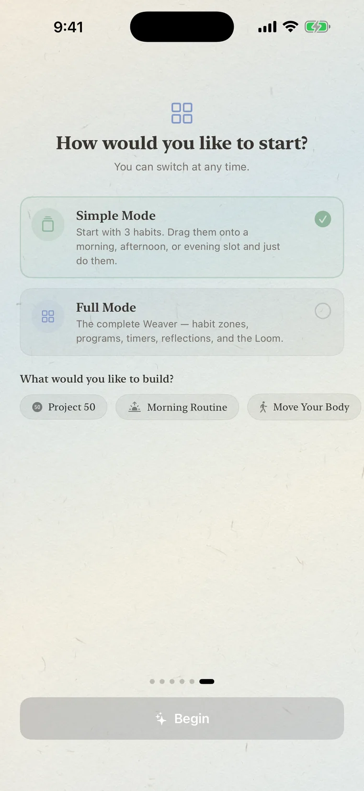
Pick a mode. You can change your mind later. 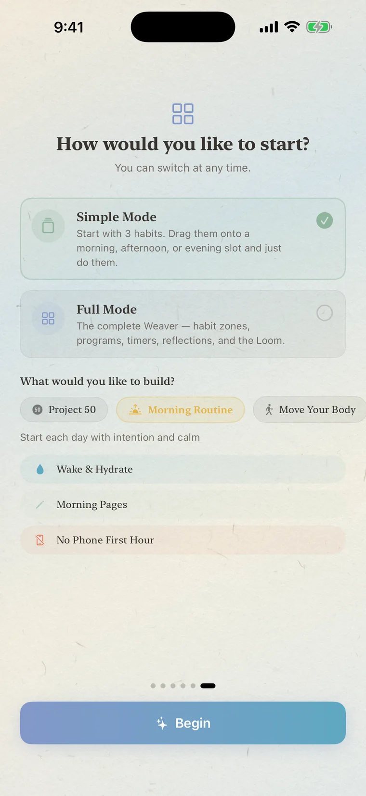
Choose a focus area and meet your three starters. 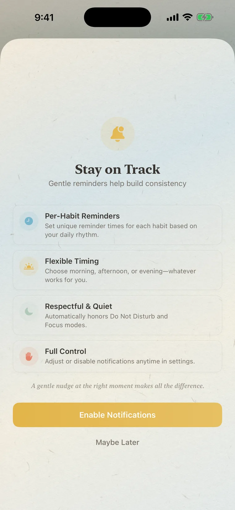
Reminders are optional. “Maybe Later” is always fine. -
Drag your habits into the day
Your starters wait under Waiting to Schedule. Press and drag one into Morning, Afternoon, or Evening, then set a start time, or choose “Skip — Any time in this period” if the exact time doesn’t matter.
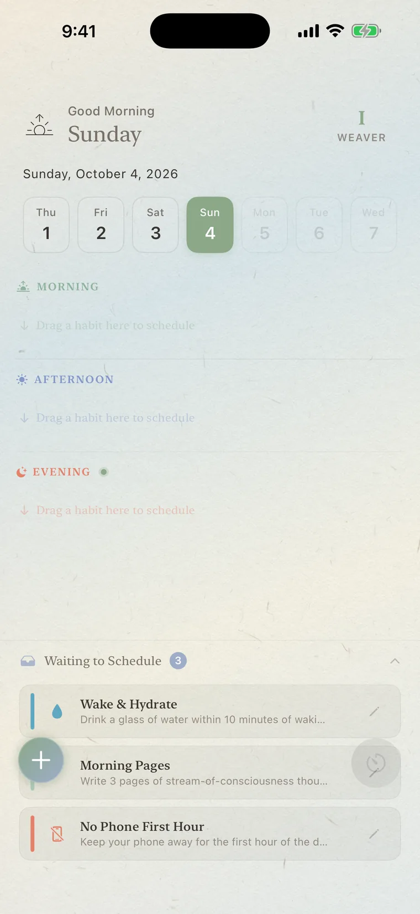
Three slots, three habits waiting. 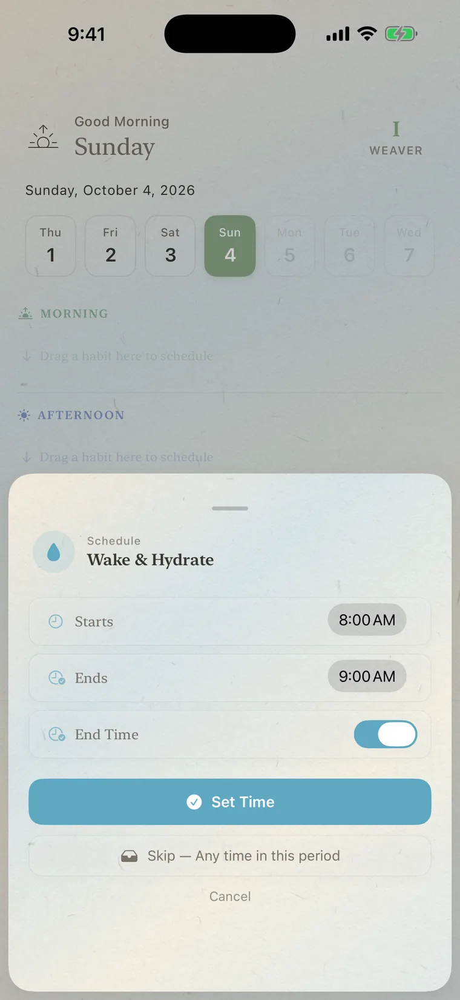
Set a time, or skip it. 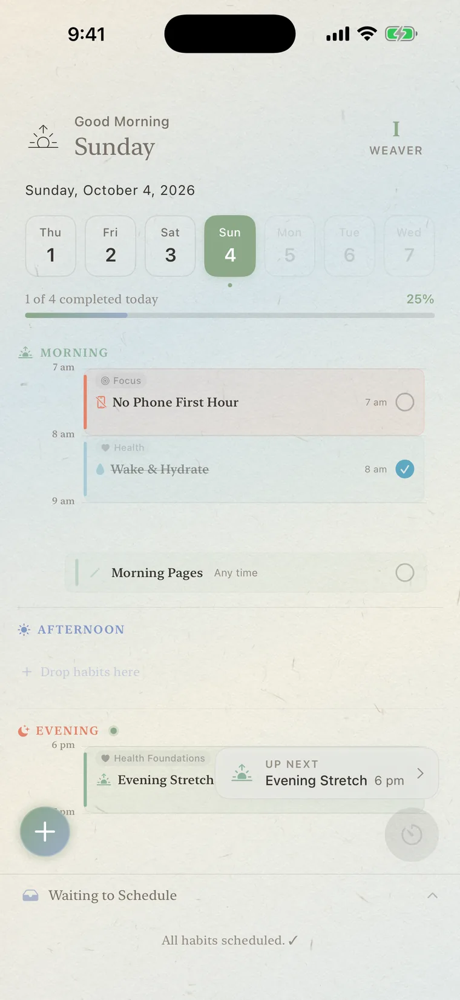
A planned day, with Up Next watching the clock. -
Do the thing, then tap the circle
When you’ve done a habit, tap its circle. That’s a thread woven. There’s nothing to rate and nothing to explain.
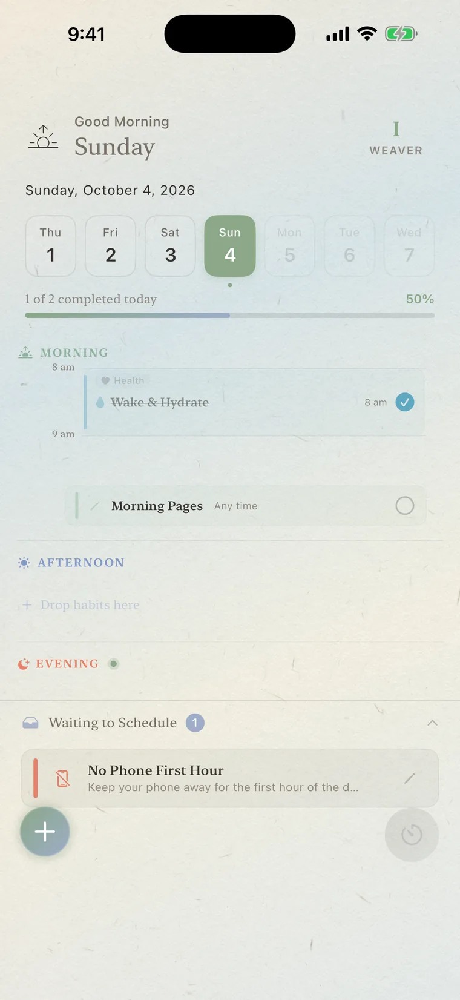
One circle, one thread. 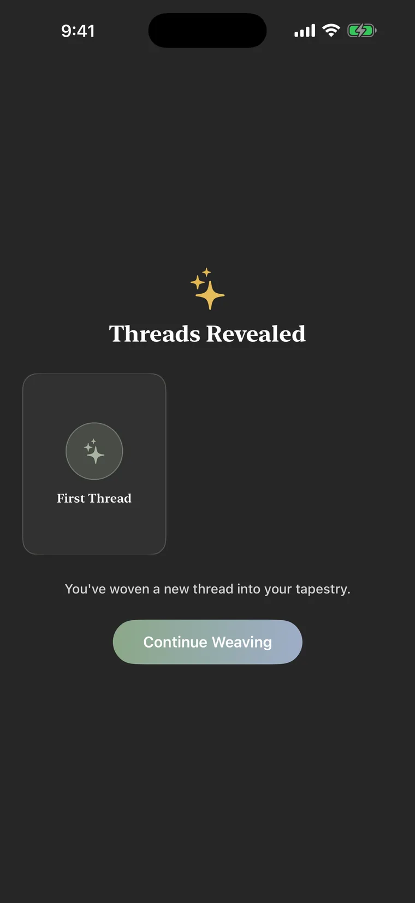
Your first thread is noticed, gently. -
Visit the Grimoire when you’re curious
Open Profile to meet your Weaver level, the season of your journey, and the Grimoire. There’s no need to check it daily. It keeps itself.
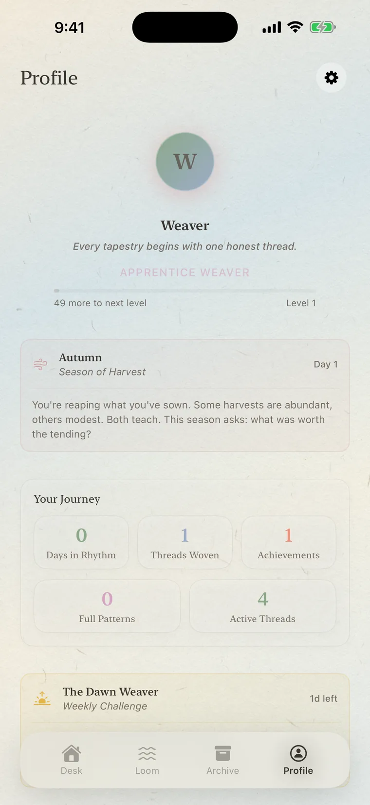
Your level, your season, your journey.
III · Simple and Full Mode
Open as much of the Weaver as you like.
Simple Mode is the Desk and nothing else: three slots for the day, a focus button, and an Up Next reminder for whatever is coming. It’s the calmest way to begin.
Full Mode is the complete Weaver: the Desk with a daily intention, Quick Actions and your habit list, plus the Loom, the Archive, the Habit Library, and guided programs.
To switch, tap the + button on the Desk and choose Full Mode (or Simple Mode, once you’re in Full Mode). Nothing is lost either way.
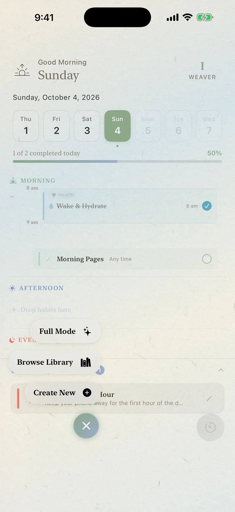
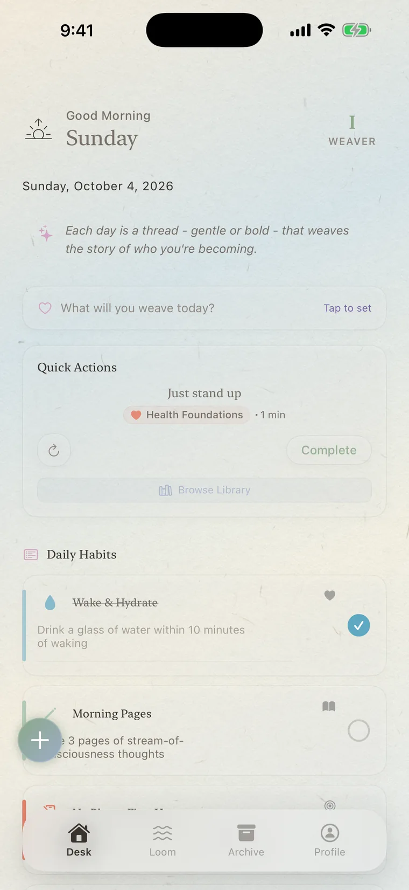
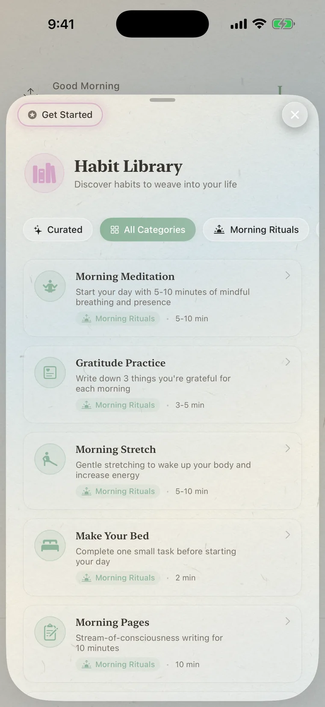
IV · Seed, Sprout, Bloom
Three sizes for every day.
When you create a habit, you can describe up to three versions of it. The app’s own prompts show the idea:
On a good day, do the Bloom. On a hard day, do the Seed. Both are threads, and both count. In Theme Weeks, every day comes with Seed, Sprout, and Bloom versions built in.
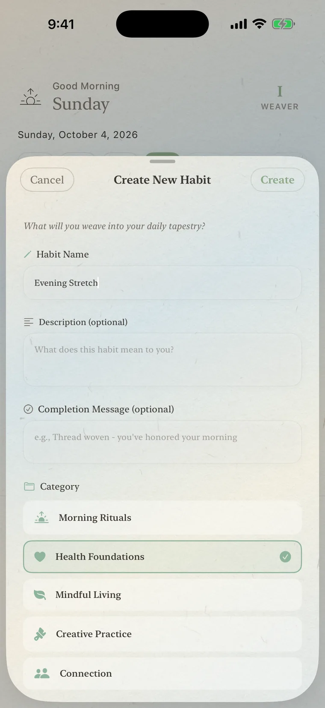
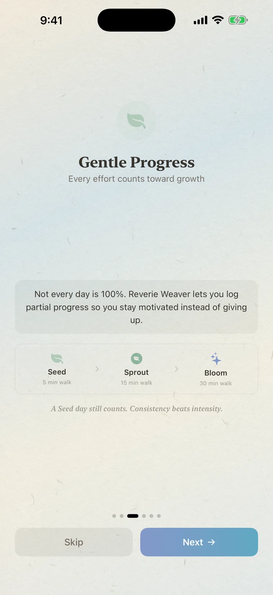
V · Gentle rules of thumb
Six kind rules.
These are habits about habits, rules of thumb rather than science. Use the ones that help.
- Start small. Begin with habits you could keep on a bad week, and add more only when the first ones feel easy.
- Make the first version tiny. Write the Seed so small that you could do it on your worst day.
- Give it a time, not a mood. Drag each habit into a morning, afternoon, or evening slot. “Any time in this period” counts too.
- Let rest days count. Rest is part of the rhythm. A pause you chose isn’t a failure.
- If you miss, return tomorrow. Don’t try to make up the lost days. The Weaver only asks that you come back.
- Look back kindly. Once a week, open the Archive and notice what you wove, not what you missed.
VI · The Loom
A calm place to focus.
The Loom is where the day takes shape. It shows a week strip, Daily Top 3 Weaves for the three things that matter today, and a timeline of your hours. The round hourglass button is your focus timer, and you can add a soft ambient sound if it helps.
In landscape focus, either audio button opens Focus Sound Studio. Music and Atmosphere have separate woven-thread level controls, so rain or forest can sit quietly beneath a focus track; you can also mute either layer or choose another atmosphere without leaving the timer. The completion chime is a separate setting, so silencing music never silently removes the end-of-session cue.
The free version includes three priority tasks and two focus sessions a day, plus ambient sounds. Weaver+ removes those limits and adds the curated music library and PDF or photo schedule import, with the text read on your device.
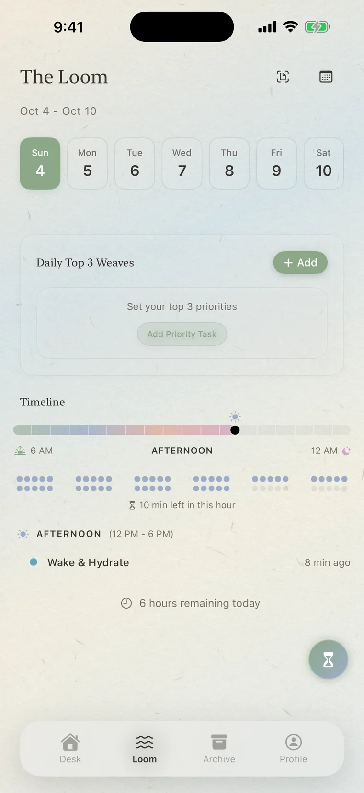
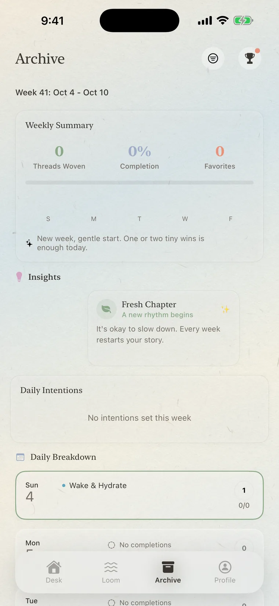
VII · Reading the Grimoire
A book that writes itself.
Open Profile and scroll to The Weaver’s Grimoire. Each constellation is a card. A sealed card shows only a lock: tap it to read the hint for finding it. An open card can be tapped to read its lore. As your level grows, new notes appear in The Weaver’s Notes below, and some achievements stay hidden until you’ve earned them.
None of it is a score to chase. Levels follow the threads you weave, from Apprentice at the start through Mindful, Devoted, Master, and Luminous, to Transcendent beyond a thousand threads.
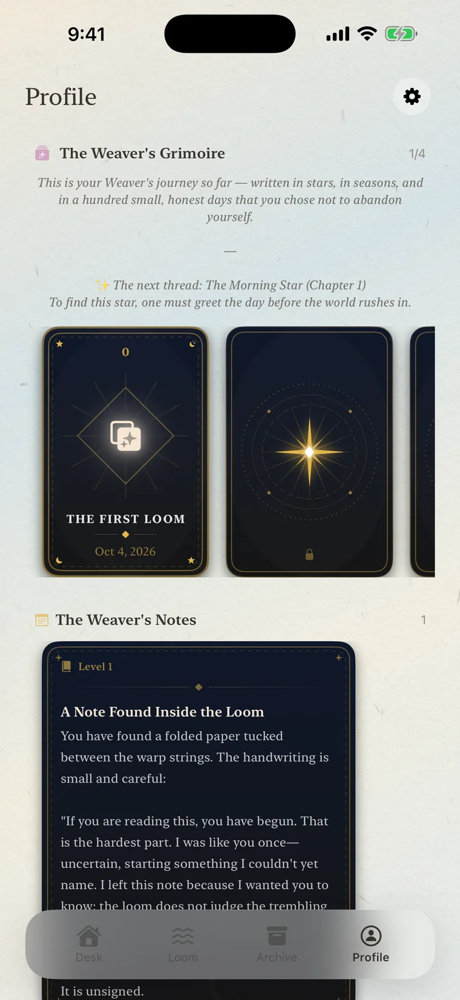
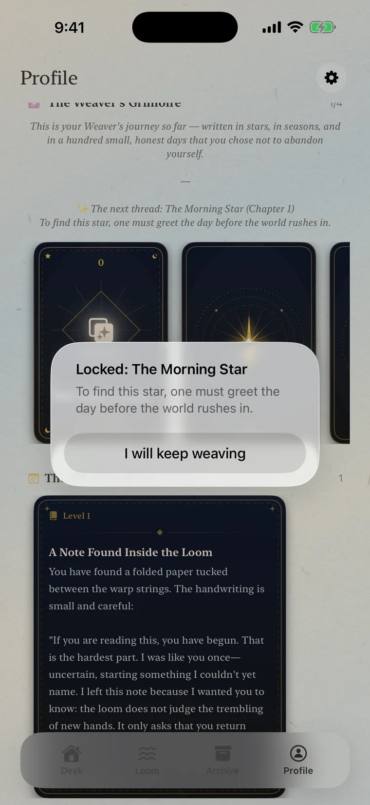
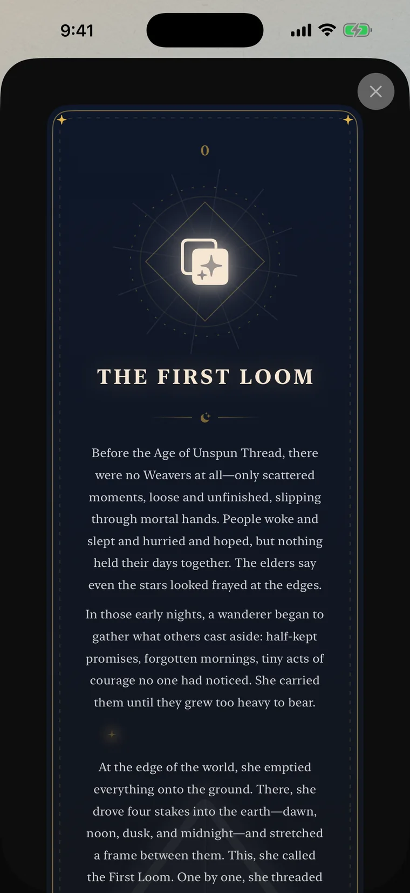
VIII · Your data
It stays with you.
Everything you create lives on your device. There’s no account, and no server receives your habits or reflections. A few things worth knowing:
- iCloud sync is optional and off by default. Turn it on in Settings (the gear on Profile) if you want your devices to stay in step. A message explains what will happen, then you close and reopen the app to start syncing.
- Exporting is a personal record, not a full backup. Export Habits & Reflections saves a JSON file you can keep or share. It doesn’t include tasks, focus sessions, program progress, achievements, or PDFs, and it can’t be re-imported. Reflections can also be exported as a PDF.
- You can delete things. Edit or remove habits, reflections, and tasks any time. Deleting the app removes its local data, and iCloud data can be managed in your iCloud settings.
IX · A gentle note
An app can only do so much.
Reverie Weaver is a companion for everyday routines. On the harder days, it helps to have people beside you too: someone you trust, or a professional if you need one.
You are not behind. The loom only asks that you return.
Questions about the app? See Support.